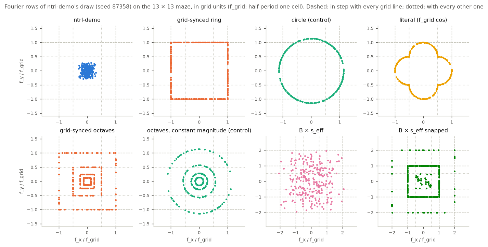
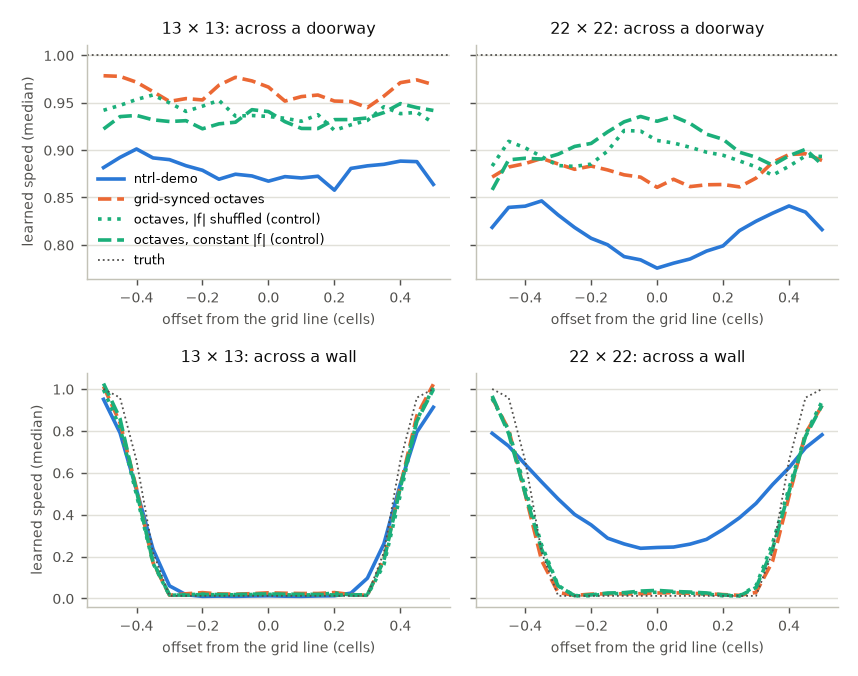
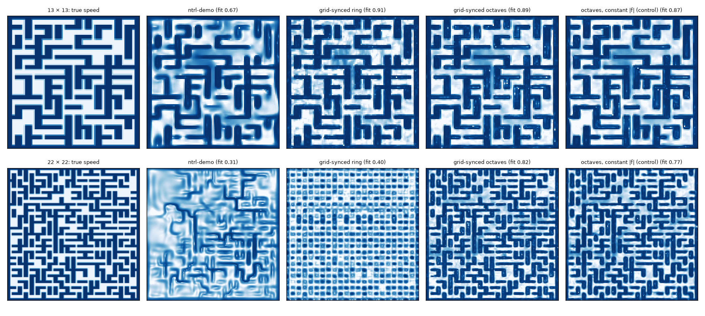

ntrl-demo describes each pose to its network with random Fourier features, and on mazes larger than its 7×7 demo those features are too coarse to resolve a cell. Tuning them to the maze grid fixes most of that, but only with more than one scale. Grid-synced octaves (half periods of 1, 2, 4, … cells, each wave in step with the grid lines) solve 95 % of the 13×13 runs and 50 % of the 22×22 runs, against 59 % and 23 % for ntrl-demo and 90 % and 43 % for the best hand-tuned frequency scale. The lock to the grid is a small part of that gain: over the same octaves with their magnitudes shuffled out of step, it sharpens the walls and adds 2.5 points on 13×13 and 5.1 on 22×22 (mean of paired training seeds). The single-frequency version, every wave at one cell per half period, draws walls sharply but is erratic: it helps on 10×10 and 13×13 and collapses on 7×7 and 22×22.
ntrl-demo feeds each pose q = (x, y, φ) to its network as 128 sine/cosine pairs, sin(2π B·q) and cos(2π B·q), with the rows of B drawn from a normal distribution. Every row is a plane wave. The maze walls all lie on the lines of an n × n grid, so a wave can be put in step with the grid: if its frequency along x is f_grid = 1 / (2 × cell), one cell is exactly half a period, a one-cell shift flips its sign, and every vertical grid line sees the same pattern.
For a wave at an angle θ′ to the nearest grid axis, the distance between its crests measured along the axis is the hypotenuse of a right triangle whose leg is the half period along the wave. Making that hypotenuse one cell gives a half period of cell · cos θ′ along the wave, a frequency of f_grid / cos θ′. In the frequency plane these rows sit on a square, the ring. Read the other way round (half period = cell / cos θ′, frequency f_grid · cos θ′), a wave is in step with the grid crossings only for a traveller moving along its own direction; across the grid its crests drift, as the right panel shows. Both were trained.
The circle is the control: the same 128 directions at the ring's mean frequency (1.14 f_grid) without the 1/cos θ′ correction, so it has the same scale but is in step with the grid only at one angle. On ntrl-demo's own matrix the highest frequency is 0.56, 0.39, 0.30 and 0.18 f_grid on the 7, 10, 13 and 22-cell mazes: beyond 7 × 7 none of its features changes sign within a cell.
Vertical lines: grid lines one cell apart (walls sit on them). Orange: the crests (solid) and troughs (dashed) of one Fourier feature at θ′ = 30° to the x axis; the dotted horizontal line marks where they cross the axis. Left: the frequency grows as 1/cos θ′, the crests are cell · cos θ′ apart along the wave and meet every grid line. Right: the frequency shrinks as cos θ′; a traveller moving along the wave (dotted ray) passes one half period per grid crossing, but across the grid the crests drift off the lines (⅓ cell at the next line, ⅔ at the one after).

Every field below is ntrl-demo's own network and training; only the Fourier matrix differs. The single-frequency ring helps on 10×10 and 13×13 but its long-range field collapses on 7×7 (20 %) and 22×22 (2 %); the circle with the same frequencies out of step does the same (18 %, 4 %). The octaves keep the cell-scale waves and add coarser ones, match ntrl-demo on 7×7 (99 % against 100 %) and beat it on every larger maze without any per-maze setting: the grid fixes every frequency.
The two octave controls isolate the lock. Shuffled keeps the exact set of magnitudes and directions and only reassigns which direction gets which magnitude, so its waves are no longer in step; constant gives every wave of an octave the same magnitude. Paired by training seed (same draw, same initial weights), the synced octaves beat the shuffled control on 3 of 3 seeds on 13×13 (2.5 points on average) and 4 of 5 on 22×22 (5.1 points), and the constant-magnitude control on 3 of 3 and 5 of 5 (2.0 and 7.6 points). On 10×10 every octave field is near the ceiling and the comparison is mixed (2 of 3 and 1 of 3 wins, 2.4 and 1.1 points).
| field | features | 7×7 | 10×10 | 13×13 | 22×22 |
|---|---|---|---|---|---|
| ntrl-demo | B ~ N(0, 1), as shipped | 100 % 480 / 480 / 477 of 480 | 88 % 500 / 523 / 560 of 600 | 59 % 347 / 320 / 393 of 600 | 23 % 152 / 186 / 167 of 720 |
| best B × s (earlier sweep) | B × 1.5 / 3 / 6, best per maze | 100 % (B × 1.5) 477 / 480 / 477 of 480 | 95 % (B × 3) 592 / 575 / 545 of 600 | 90 % (B × 3) 554 / 529 / 537 of 600 | 43 % (B × 6) 302 / 229 / 395 of 720 |
| grid-synced ring | |f| = f_grid / cos θ′ (in sync) | 20 % 98 of 480, seed 87358 | 88 % 528 of 600, seed 87358 | 81 % 484 of 600, seed 87358 | 2 % 15 of 720, seed 87358 |
| circle control | |f| = 1.14 f_grid (same mean, not in sync) | 18 % 84 of 480, seed 87358 | 84 % 503 of 600, seed 87358 | 77 % 461 of 600, seed 87358 | 4 % 31 of 720, seed 87358 |
| grid-synced octaves | half periods 1, 2, 4, … cells, each f_grid / (L cos θ′) | 99 % 476 of 480, seed 87358 | 99 % 598 / 600 / 592 of 600 | 95 % 569 / 573 / 564 of 600 | 50 % 410 / 327 / 334 of 720 |
| octaves, shuffled magnitudes (control) | the same magnitudes and directions, shuffled within each octave | – | 97 % 569 / 580 / 597 of 600 | 92 % 556 / 554 / 551 of 600 | 44 % 343 / 328 / 290 of 720 |
| octaves, constant magnitude (control) | the same octaves, constant |f| per octave | 99 % 474 of 480, seed 87358 | 98 % 575 / 600 / 596 of 600 | 93 % 564 / 555 / 551 of 600 | 42 % 336 / 302 / 271 of 720 |
| literal (cell / cos θ′) | |f| = f_grid · cos θ′ | 24 % 113 of 480, seed 87358 | 96 % 575 of 600, seed 87358 | 87 % 520 of 600, seed 87358 | 29 % 211 of 720, seed 87358 |
MPPI success over planning seeds 0, 1 and 2, pooled over the training seeds a field has (87358, 1, 2; small figures: per seed). Every field is ntrl-demo's own network and training with only the Fourier matrix changed.
Success by true travel distance; each point averages the training seeds a field has, the whisker is their range.
Runs solved (of 3 planning seeds × the maze's queries) by the grid-synced octaves and the two controls with the same training seed, which means the same Fourier draw and the same initial weights. 22×22 has two extra seeds (3, 4) for this comparison only.
| maze | training seed | synced octaves | shuffled magnitudes | constant magnitude | synced − shuffled | synced − constant |
|---|---|---|---|---|---|---|
| 7×7 | 87358 | 476 of 480 | – | 474 | – | +2 |
| 10×10 | 87358 | 598 of 600 | 569 | 575 | +29 | +23 |
| 10×10 | 1 | 600 of 600 | 580 | 600 | +20 | +0 |
| 10×10 | 2 | 592 of 600 | 597 | 596 | −5 | −4 |
| 13×13 | 87358 | 569 of 600 | 556 | 564 | +13 | +5 |
| 13×13 | 1 | 573 of 600 | 554 | 555 | +19 | +18 |
| 13×13 | 2 | 564 of 600 | 551 | 551 | +13 | +13 |
| 22×22 | 87358 | 410 of 720 | 343 | 336 | +67 | +74 |
| 22×22 | 1 | 327 of 720 | 328 | 302 | −1 | +25 |
| 22×22 | 2 | 334 of 720 | 290 | 271 | +44 | +63 |
| 22×22 | 3 | 351 of 720 | 307 | 297 | +44 | +54 |
| 22×22 | 4 | 342 of 720 | 311 | 285 | +31 | +57 |
The octave field is also the most accurate one: the median |log(T/T*)| of its start-to-goal travel times is 0.13 on 13×13 and 0.23 on 22×22, against 0.29 and 0.27 for ntrl-demo and 0.17 and 0.41 for the best B × s; the speed it implies (1/|∇T|) matches the true speed far better (held-out log-speed correlation 0.89 and 0.80 against 0.69 and 0.32). The one place it is worse is the longest trips on 22×22 (32–64 cells: 0.36 against ntrl-demo's 0.18), where ntrl-demo's smooth, low-frequency field estimates the travel time well but cannot plan it (0 of its 360 runs in that bin succeed), because its walls have faded.
| field | seeds | 7×7 | 10×10 | 13×13 | 22×22 |
|---|---|---|---|---|---|
| ntrl-demo | 3 | 0.046 fit 0.92 · cos 0.94 | 0.219 fit 0.81 · cos 0.91 | 0.293 fit 0.69 · cos 0.88 | 0.271 fit 0.32 · cos 0.79 |
| best B × s (earlier sweep) | 3 | 0.043 fit 0.93 · cos 0.94 | 0.120 fit 0.90 · cos 0.92 | 0.168 fit 0.84 · cos 0.92 | 0.413 fit 0.66 · cos 0.84 |
| grid-synced ring | 1 | 1.295 fit 0.97 · cos 0.70 | 0.118 fit 0.94 · cos 0.89 | 0.146 fit 0.91 · cos 0.86 | 2.050 fit 0.40 · cos 0.15 |
| circle control | 1 | 1.571 fit 0.96 · cos 0.62 | 0.144 fit 0.93 · cos 0.89 | 0.159 fit 0.88 · cos 0.86 | 2.016 fit 0.51 · cos 0.10 |
| grid-synced octaves | 1/3 | 0.033 fit 0.95 · cos 0.94 | 0.109 fit 0.92 · cos 0.92 | 0.132 fit 0.89 · cos 0.92 | 0.235 fit 0.80 · cos 0.84 |
| octaves, shuffled magnitudes (control) | 3 | – | 0.115 fit 0.91 · cos 0.92 | 0.143 fit 0.88 · cos 0.92 | 0.241 fit 0.76 · cos 0.84 |
| octaves, constant magnitude (control) | 1/3 | 0.038 fit 0.95 · cos 0.95 | 0.121 fit 0.90 · cos 0.93 | 0.144 fit 0.88 · cos 0.91 | 0.278 fit 0.75 · cos 0.85 |
| literal (cell / cos θ′) | 1 | 1.161 fit 0.96 · cos 0.74 | 0.113 fit 0.93 · cos 0.89 | 0.152 fit 0.90 · cos 0.90 | 0.426 fit 0.77 · cos 0.67 |
Large figure: median |log(T / T*)| of the learned travel time from start to goal over the maze's test queries (0 = exact). Small: held-out log-speed correlation of 1 / |∇T| with the true speed, and median cosine between the field's descent direction at the start and the truth's. Means over the training seeds a field has.
Why the single frequency fails. With every wave at the grid frequency the network has to build maze-scale distances out of products of cell-scale waves. On 10×10 and 13×13 it manages; on 7×7 its travel time stops growing after about two cells (T/T* 0.27, although its local speed fit is the best of any field, 0.97), and the 22×22 field is ripple: 28.07 local minima of T along each long true path (ntrl-demo: 1.86), most of them at the cell centres, where 21 % of the field's cell-scale error is explained by the position within the cell. The walls fade (learned speed 0.35 cells from a wall 0.81, truth 0.22).
What the lock does. The synced octaves and the shuffled control have the same magnitudes and directions; only the lock differs. The synced fields have the sharper wall barrier in every pair (22×22 near-wall slope 0.71 against 0.57, seed 87358; 0.62 vs 0.55 and 0.63 vs 0.57 for seeds 1 and 2) and hit fewer walls, while their local-minimum counts are the same (116 vs 106 over three seeds on 22×22). A wave in step with the grid has the same phase at every grid line, so a sharp edge built at one line is the same edge at all of them; out of step, the edge pattern drifts across the maze. Some of the avoided wall hits become stalls instead of successes, the same trade ntrl-demo's wall term made in the maze-scale study. Two other explanations for the stalls were tested and ruled out: the octave fields' cell-scale error is not locked to the grid (under 1 % of it is explained by the position within the cell), and their minima are not concentrated at wall corners any more than the controls'.

| maze | field | doorway dip | phantom doorways | speed 0.35 cell from a wall | bumps per long path | near-wall slope / cos |
|---|---|---|---|---|---|---|
| 7×7 | ntrl-demo | 1.00 | 0 % | 0.16 (truth 0.22) | 0.05 | 0.86 / 0.98 |
| 7×7 | B × 1.5 | 1.01 | 0 % | 0.16 (truth 0.22) | 0.05 | 0.88 / 0.99 |
| 7×7 | B × 3 | 1.04 | 0 % | 0.17 (truth 0.22) | 0.65 | 0.94 / 0.99 |
| 7×7 | grid-synced ring | 0.98 | 0 % | 0.18 (truth 0.22) | 6.88 | 1.00 / 1.00 |
| 7×7 | circle control | 1.01 | 0 % | 0.18 (truth 0.22) | 10.90 | 0.94 / 0.99 |
| 7×7 | literal (cell / cos θ′) | 1.05 | 0 % | 0.17 (truth 0.22) | 8.30 | 0.98 / 0.99 |
| 7×7 | grid-synced octaves | 0.98 | 0 % | 0.15 (truth 0.22) | 0.05 | 0.93 / 0.99 |
| 7×7 | octaves, constant magnitude (control) | 0.99 | 0 % | 0.17 (truth 0.22) | 0.05 | 0.90 / 0.99 |
| 10×10 | ntrl-demo | 0.96 | 0 % | 0.19 (truth 0.22) | 0.04 | 0.62 / 0.96 |
| 10×10 | B × 1.5 | 0.94 | 0 % | 0.20 (truth 0.22) | 0.10 | 0.68 / 0.97 |
| 10×10 | B × 3 | 0.95 | 0 % | 0.14 (truth 0.22) | 0.14 | 0.80 / 0.98 |
| 10×10 | B × 6 | 0.99 | 0 % | 0.15 (truth 0.22) | 2.16 | 0.90 / 0.98 |
| 10×10 | grid-synced ring | 0.96 | 1 % | 0.16 (truth 0.22) | 0.54 | 0.89 / 0.99 |
| 10×10 | circle control | 0.99 | 0 % | 0.16 (truth 0.22) | 0.38 | 0.89 / 0.99 |
| 10×10 | literal (cell / cos θ′) | 1.00 | 0 % | 0.17 (truth 0.22) | 0.24 | 0.85 / 0.98 |
| 10×10 | grid-synced octaves | 0.96 | 0 % | 0.15 (truth 0.22) | 0.04 | 0.87 / 0.98 |
| 10×10 | octaves, constant magnitude (control) | 0.97 | 0 % | 0.18 (truth 0.22) | 0.14 | 0.80 / 0.98 |
| 10×10 | octaves, shuffled magnitudes (control) | 0.94 | 0 % | 0.16 (truth 0.22) | 0.09 | 0.84 / 0.98 |
| 13×13 | ntrl-demo | 0.97 | 0 % | 0.25 (truth 0.22) | 0.06 | 0.48 / 0.92 |
| 13×13 | B × 1.5 | 0.96 | 1 % | 0.20 (truth 0.22) | 0.07 | 0.56 / 0.94 |
| 13×13 | B × 3 | 0.97 | 0 % | 0.15 (truth 0.22) | 0.07 | 0.68 / 0.96 |
| 13×13 | B × 6 | 0.96 | 1 % | 0.15 (truth 0.22) | 0.05 | 0.79 / 0.98 |
| 13×13 | grid-synced ring | 1.01 | 1 % | 0.15 (truth 0.22) | 0.41 | 0.85 / 0.98 |
| 13×13 | circle control | 0.98 | 3 % | 0.16 (truth 0.22) | 0.41 | 0.80 / 0.98 |
| 13×13 | literal (cell / cos θ′) | 0.98 | 1 % | 0.15 (truth 0.22) | 0.19 | 0.84 / 0.98 |
| 13×13 | grid-synced octaves | 0.97 | 0 % | 0.18 (truth 0.22) | 0.04 | 0.78 / 0.98 |
| 13×13 | octaves, constant magnitude (control) | 0.98 | 0 % | 0.18 (truth 0.22) | 0.01 | 0.74 / 0.97 |
| 13×13 | octaves, shuffled magnitudes (control) | 0.99 | 0 % | 0.17 (truth 0.22) | 0.04 | 0.77 / 0.98 |
| 22×22 | ntrl-demo | 0.96 | 0 % | 0.55 (truth 0.22) | 1.86 | 0.24 / 0.56 |
| 22×22 | B × 1.5 | 0.95 | 0 % | 0.51 (truth 0.22) | 1.63 | 0.26 / 0.63 |
| 22×22 | B × 3 | 1.01 | 0 % | 0.27 (truth 0.22) | 0.96 | 0.37 / 0.83 |
| 22×22 | B × 6 | 1.03 | 1 % | 0.17 (truth 0.22) | 0.56 | 0.51 / 0.91 |
| 22×22 | grid-synced ring | 1.23 | 0 % | 0.81 (truth 0.22) | 28.07 | 0.25 / 0.81 |
| 22×22 | circle control | 1.05 | 0 % | 0.86 (truth 0.22) | 21.25 | 0.32 / 0.84 |
| 22×22 | literal (cell / cos θ′) | 0.98 | 2 % | 0.18 (truth 0.22) | 3.53 | 0.70 / 0.95 |
| 22×22 | grid-synced octaves | 0.97 | 0 % | 0.18 (truth 0.22) | 0.28 | 0.71 / 0.97 |
| 22×22 | octaves, constant magnitude (control) | 1.03 | 0 % | 0.24 (truth 0.22) | 0.17 | 0.60 / 0.95 |
| 22×22 | octaves, shuffled magnitudes (control) | 1.00 | 1 % | 0.26 (truth 0.22) | 0.23 | 0.57 / 0.95 |
Doorway dip: learned speed in the middle of a free doorway over the speed half a cell either side (1 = no phantom wall). Phantom doorways: share slowed to half speed or less. Speed 0.35 cells from a wall: crossing heading, the trained label in brackets. Bumps: local minima of T(x, goal) along the true paths of queries of 8 cells or more, where MPPI can stall. Near-wall slope / cos: S·|∇T| and cos(∇T, into the wall) on held-out pairs 2–8 cells apart (targets 1 / 1).

jeffrey/grid_sync/ (features.py builds the matrices, gridsync.py trains and evaluates, run.py registers, report.py, mechanism.py, figs.py, page.py).| maze | field | training seed | run id |
|---|---|---|---|
| 7×7 | ntrl-demo | 87358 | 20261101T200440Z-b920137d |
| 7×7 | ntrl-demo | 1 | 20261101T201244Z-1ae74c20 |
| 7×7 | ntrl-demo | 2 | 20261101T202527Z-32f7835e |
| 7×7 | B × 1.5 | 87358 | 20261102T020329Z-e5dfdec7 |
| 7×7 | B × 1.5 | 1 | 20261102T030803Z-41ecc7f5 |
| 7×7 | B × 1.5 | 2 | 20261102T032233Z-b9933397 |
| 7×7 | grid-synced ring | 87358 | 20261103T022616Z-338f643e |
| 7×7 | circle control | 87358 | 20261103T023436Z-54b5d14c |
| 7×7 | grid-synced octaves | 87358 | 20261103T024259Z-a5bf17a0 |
| 7×7 | octaves, constant magnitude (control) | 87358 | 20261103T025131Z-a1b8a806 |
| 7×7 | literal (cell / cos θ′) | 87358 | 20261103T050136Z-447540af |
| 10×10 | ntrl-demo | 87358 | 20261102T032216Z-e76476bf |
| 10×10 | ntrl-demo | 2 | 20261102T032238Z-09a41392 |
| 10×10 | ntrl-demo | 1 | 20261102T033305Z-5d802f80 |
| 10×10 | B × 3 | 87358 | 20261102T040322Z-06099883 |
| 10×10 | B × 3 | 1 | 20261102T050643Z-d64a530a |
| 10×10 | B × 3 | 2 | 20261102T051954Z-3166a3d5 |
| 10×10 | grid-synced ring | 87358 | 20261102T211322Z-208ddefa |
| 10×10 | circle control | 87358 | 20261103T015321Z-09893401 |
| 10×10 | grid-synced octaves | 87358 | 20261103T020200Z-c1c98536 |
| 10×10 | grid-synced octaves | 1 | 20261103T030135Z-0aa1bd87 |
| 10×10 | grid-synced octaves | 2 | 20261103T031739Z-5c625e44 |
| 10×10 | octaves, shuffled magnitudes (control) | 87358 | 20261103T021807Z-8bd0de42 |
| 10×10 | octaves, shuffled magnitudes (control) | 1 | 20261103T033333Z-62734064 |
| 10×10 | octaves, shuffled magnitudes (control) | 2 | 20261103T034124Z-11ce6f89 |
| 10×10 | octaves, constant magnitude (control) | 87358 | 20261103T021009Z-c21a3862 |
| 10×10 | octaves, constant magnitude (control) | 1 | 20261103T030933Z-01456134 |
| 10×10 | octaves, constant magnitude (control) | 2 | 20261103T032543Z-296c34fd |
| 10×10 | literal (cell / cos θ′) | 87358 | 20261103T045356Z-b3124c1f |
| 13×13 | ntrl-demo | 87358 | 20261101T203437Z-ebc95225 |
| 13×13 | ntrl-demo | 1 | 20261101T204630Z-58badec5 |
| 13×13 | ntrl-demo | 2 | 20261101T205900Z-c57aa0f1 |
| 13×13 | B × 3 | 87358 | 20261102T014741Z-dbca8e69 |
| 13×13 | B × 3 | 1 | 20261102T023943Z-95b7bd4e |
| 13×13 | B × 3 | 2 | 20261102T025340Z-27b1eeb6 |
| 13×13 | grid-synced ring | 87358 | 20261102T204749Z-e2b2c1d1 |
| 13×13 | circle control | 87358 | 20261102T210518Z-5c13deba |
| 13×13 | grid-synced octaves | 87358 | 20261102T231704Z-952dc19f |
| 13×13 | grid-synced octaves | 1 | 20261103T005705Z-20429171 |
| 13×13 | grid-synced octaves | 2 | 20261103T011315Z-5587c3f4 |
| 13×13 | octaves, shuffled magnitudes (control) | 87358 | 20261103T012907Z-0d652f04 |
| 13×13 | octaves, shuffled magnitudes (control) | 1 | 20261103T013714Z-9831c88d |
| 13×13 | octaves, shuffled magnitudes (control) | 2 | 20261103T014516Z-ef4655b8 |
| 13×13 | octaves, constant magnitude (control) | 87358 | 20261102T232517Z-1ed73030 |
| 13×13 | octaves, constant magnitude (control) | 1 | 20261103T010508Z-229bcd54 |
| 13×13 | octaves, constant magnitude (control) | 2 | 20261103T012111Z-fad3391b |
| 13×13 | literal (cell / cos θ′) | 87358 | 20261103T034919Z-a14b5b39 |
| 22×22 | ntrl-demo | 87358 | 20261101T193703Z-dd44f02b |
| 22×22 | ntrl-demo | 1 | 20261101T194908Z-fa2678e3 |
| 22×22 | ntrl-demo | 2 | 20261101T200614Z-92e8b351 |
| 22×22 | B × 6 | 87358 | 20261102T032133Z-9d61cff5 |
| 22×22 | B × 6 | 1 | 20261102T050535Z-7879ad1e |
| 22×22 | B × 6 | 2 | 20261102T051820Z-834b2691 |
| 22×22 | grid-synced ring | 87358 | 20261102T205626Z-8b4a2b28 |
| 22×22 | circle control | 87358 | 20261102T235043Z-404c8725 |
| 22×22 | grid-synced octaves | 87358 | 20261102T233320Z-7ec5e948 |
| 22×22 | grid-synced octaves | 1 | 20261103T000737Z-76c367c9 |
| 22×22 | grid-synced octaves | 2 | 20261103T003224Z-4ebdaec0 |
| 22×22 | octaves, shuffled magnitudes (control) | 87358 | 20261102T235914Z-67f338ec |
| 22×22 | octaves, shuffled magnitudes (control) | 1 | 20261103T002409Z-1d92f51b |
| 22×22 | octaves, shuffled magnitudes (control) | 2 | 20261103T004857Z-6160a087 |
| 22×22 | octaves, constant magnitude (control) | 87358 | 20261102T234207Z-fd86594f |
| 22×22 | octaves, constant magnitude (control) | 1 | 20261103T001558Z-bb4f3e04 |
| 22×22 | octaves, constant magnitude (control) | 2 | 20261103T004044Z-3083d328 |
| 22×22 | literal (cell / cos θ′) | 87358 | 20261103T035709Z-8f28a39c |